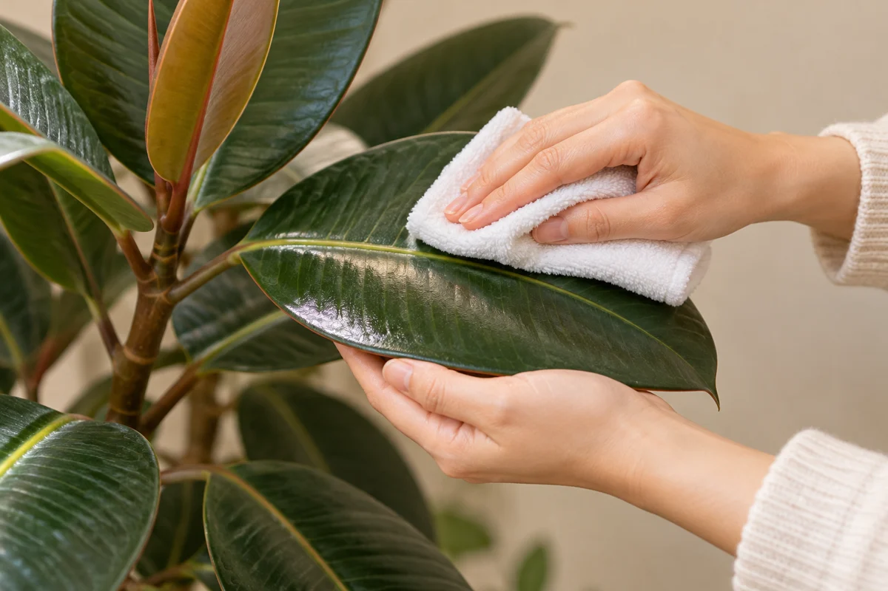
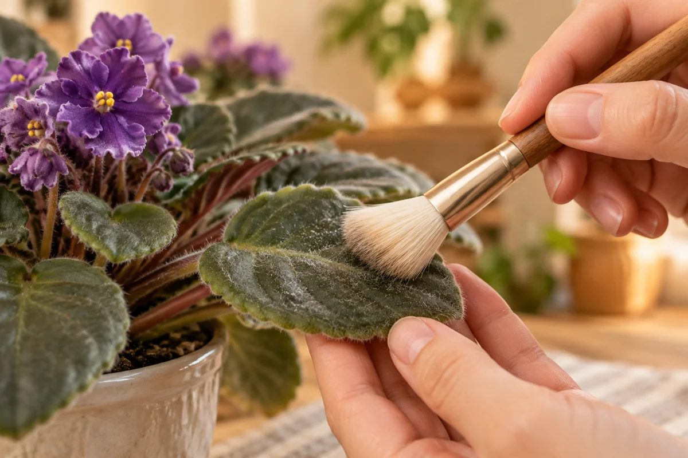

今日やることは、この3つ
- 葉がなめらかか、毛や特殊な表面があるかを確認する。
- なめらかな葉は下から支え、水で湿らせた柔らかい布で優しく拭く。
- 布をすすぎ、葉裏も観察。落ちないものは無理にこすらない。
水やりや写真を記録して変化を振り返りたい方へ。RELOHAでできることを見る ↓
① 大きな葉は、下から支えて拭く

常温の水で柔らかい布を湿らせ、滴らない程度に絞ります。葉を手のひらで支え、軽い力でほこりを拭き取ります。汚れた布はすすいでから次の葉へ。清潔な水と布だけで、多くのほこりは落とせます。［1］［2］
小さな葉をシャワーで洗う方法もありますが、水温と水圧を先に確認し、鉢の排水も確保します。無理に全鉢をお風呂へ運ばなくても、まずは拭きやすい一枚から。
② 毛のある葉は、同じように拭かない

| 葉のタイプ | 最初の選択 |
|---|---|
| なめらかで大きい葉 | 水で湿らせた柔らかい布 |
| 毛のある葉 | 柔らかいブラシで軽く。種類の注意を確認 |
| 粉をまとった葉・とても薄い葉 | 自己流でこすらず、種類の管理方法を先に確認 |
セントポーリアのような毛のある葉には、柔らかいブラシという選択肢があります。［1］葉を洗う方法やツヤ出し剤が向かない種類もあるので、「全部まとめて同じ掃除」は避けましょう。［2］
③ ツヤを出そうと、あれこれ足さない
普通のほこりなら、まずは水だけ。台所用洗剤などは葉の表面を傷め、変色の原因になることがあります。落ちないからと濃くしてこするのはやめましょう。［1］
このガイドでは、油・マヨネーズなどを塗る方法は勧めません。ツヤ出し製品を使うなら、対象植物と使い方を確認し、毛のある葉など不向きなものには使わないでください。ピカピカにすることより、傷めずほこりを落とすことが目的です。
ベタつきや白い塊は、掃除だけで済ませない。ほこりと思い込まず、葉裏や茎も確認。虫らしいものや傷みがあれば、まず何が起きているかを調べましょう。
毎週の義務より、ほこりが気になったときに
全ての植物に共通する掃除の曜日は決めなくて大丈夫。ほこりが見えたら、その葉に合う方法で。葉を触るついでに裏側や株元を見ると、普段と違うところにも気づきやすくなります。
写真を残すなら同じ光と角度で。写真を見比べるコツもどうぞ。掃除の前後だけで、健康や成長の改善を判定することはできません。
よくある質問
霧吹きだけで掃除できる？
ほこりが残ることもあります。なめらかな大きい葉なら柔らかい布で軽く拭く方法を。霧吹きを嫌う種類もあるため一律に使いません。
葉の裏も拭く？
触ってよい葉なら優しく確認しながら。裏を向けるために強くねじったり引っ張ったりしないでください。
白い跡が落ちないときは？
ほこり以外の可能性もあります。正体が分からないまま洗剤や酸でこすらず、植物名と状態を確認して購入店などに相談を。
参考情報と編集方針
大学の公開情報を確認し、RELOHA編集部が初心者向けの手順にまとめました。写真は実践結果ではなくAI生成のイメージです。種類ごとの管理は購入店やラベルの案内を優先してください。
- アイオワ州立大学：葉のほこりの落とし方柔らかい布と水、洗剤による傷み、毛のある葉とブラシ
- イリノイ大学：葉の清掃と種類別の注意常温の水、湿った柔らかい布、毛のある葉への注意
確認日：2026年10月30日。海外の季節や室温を日本へ一律に当てはめていません。RELOHAを運営する編集部による自社記事です。